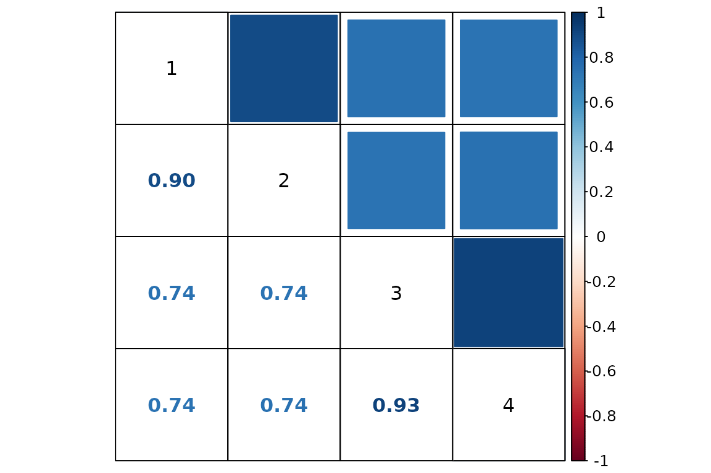

Troubleshooting analyses of NR-seq data with bakR
Isaac Vock
Source:vignettes/Troubleshooting.Rmd
Troubleshooting.RmdAbstract
Analyzing NR-seq data can be difficult. This vignette is here to help. In it, I will discuss some of the most common challenges that one can run into when analyzing your data with bakR, and how to overcome them. In particular, I will showcase bakR’s quality control check functionality (introduced in version 0.4.0) and discuss the problems that it looks out for. In addition, I will discuss aspects of NR-seq data that can hinder accurate estimation of the mutation rates in new and old sequencing reads. Finally, I will show how bakR’s alternative mutation rate estimation strategy can ameliorate some of these challenges.
Necessary Setup
Load bakR! Version 1.0.0 or later is required to run all of the code in this vignette and reproduce the results presented. ggplot2 and corrplot (the latter of which is not automatically installed with bakR) will also be used for some figures shown here.
The QC_checks() function
Version 0.4.0 of bakR introduced a function that takes as input a bakRFit object and assesses a number of aspects of the model fit and raw data:
# Simulate a nucleotide recoding dataset
sim_data <- Simulate_relative_bakRData(1000, depth = 1000000,
nreps = 2)
# This will simulate 1000 features, 1000000 reads, 2 experimental conditions,
# and 2 replicates for each experimental condition
# See ?Simulate_relative_bakRData for details regarding tunable parameters
# Run the efficient model
Fit <- bakRFit(sim_data$bakRData)
#> Finding reliable Features
#> Filtering out unwanted or unreliable features
#> Processing data...
#> Estimating pnew with likelihood maximization
#> Estimating unlabeled mutation rate with -s4U data
#> Estimated pnews and polds for each sample are:
#> # A tibble: 4 × 4
#> # Groups: mut [2]
#> mut reps pnew pold
#> <int> <dbl> <dbl> <dbl>
#> 1 1 1 0.0499 0.00100
#> 2 1 2 0.0500 0.00100
#> 3 2 1 0.0498 0.00100
#> 4 2 2 0.0498 0.00100
#> Estimating fraction labeled
#> Estimating per replicate uncertainties
#> Estimating read count-variance relationship
#> Averaging replicate data and regularizing estimates
#> Assessing statistical significance
#> All done! Run QC_checks() on your bakRFit object to assess the
#> quality of your data and get recommendations for next steps.
# Quality control checks
QC <- QC_checks(Fit)
#> Mutation rates in new reads looks good!
#> Background mutation rate looks good!
#> Average fraction news for each sample are:
#> # A tibble: 4 × 3
#> # Groups: Exp_ID [2]
#> Exp_ID Replicate avg_fn
#> <int> <dbl> <dbl>
#> 1 1 1 0.312
#> 2 1 2 0.315
#> 3 2 1 0.325
#> 4 2 2 0.321
#> The average fraction news in all samples are between 0.2 and 0.8,
#> suggesting an appropriate label time!
#> logit(fn) correlations for each pair of replicates are:
#> Exp_ID Rep_ID1 Rep_ID2 correlation
#> 1 1 1 2 0.8961197
#> 2 2 1 2 0.9262164
#> logit(fn) correlations are high, suggesting good reproducibility!
#> I suggest running the Hybrid implementation next. This can be done
#> with bakRFit(Fit, HybridFit = TRUE), where Fit is your bakRFit object.QC_checks assesses four aspects of your data and bakR’s model fit:
- Raw mutation rates
- Inferred new and old read mutation rates
- Average fraction new
- Fraction new estimate replicate correlation
Raw mutation rates
The first thing that QC_checks() assesses is the average
mutation rate in all sequencing reads from all analyzed samples. High
quality data is characterized by mutation rates that are higher in all
+s4U samples than in any -s4U samples. In
addition, to a first order approximation the higher the mutation rates
in +s4U samples and the lower the mutation rates in
-s4U samples, the better. One output of QC_checks is a
convenient plot of raw mutation rates to see what these look like for
your data:
# Barplots of raw mutation rates
QC$raw_mutratesIn this simulated data, you can see that the +s4U raw mutation rates are all consistenly much higher than the -s4U mutation rates. The barplot also provides a quasi-arbitrary guide for what good +s4U and -s4U mutation rates are.
Inferred mutation rates
The second thing that QC_checks() assesses is the
mutation rate of new and old reads, inferred by bakR. The difference
between the inferred and raw mutation rates can be a cause of confusion
for those new to NR-seq data. The raw mutation rates are the average
proportion of Ts that are mutated in all sequencing reads for a given
sample. This means that the raw mutation rates average over mutation
rates from both new reads (i.e., reads derived from RNA synthesized
during metabolic labeling) and old reads (i.e., those that were
synthesized prior to metabolic labeling). The inferred mutation rates
are the estimated mutation rates of old and new reads separately. Higher
inferred mutation rates yield higher raw mutation rates, but they are
distinct quantities. In particular, the raw mutation rate depends not
only on the new and old read mutation rates, but on what fraction of
sequencing reads are new and what fraction are old.
Like with the raw mutation rates, higher new read mutation rates and
lower old read mutation rates are better. QC_checks()
outputs a helpful visualization of these mutation rates:
# Barplots of inferred mutation rates
QC$conversion_ratesOnce again, this simulated data looks good!
Average fraction news
The third thing that QC_checks() assesses is the average
estimated fraction new. The ability to accurately infer the degradation
kinetics of a particular RNA feature is highly dependent on the
relationship between the length of metabolic labeling and the half-life
of the feature. More specifically, some really
nice work from the Dieterich lab has shown that degradation rate
constant estimates are more accurate for features with half-lives closer
to the metabolic labeling time. If the label time is much longer
(shorter) than a feature’s half-live, than the feature will be almost
completely labeled (unlabeled). The relationship between fraction new
and degradation rate constant makes it so that at extreme fraction news
(close to 0 or 1), the rate constant estimate is very sensitive to the
exact fraction new estimate. This means that fraction news close to 0 or
1 yield more uncertain kinetic parameter estimates.
QC_checks() will output a message about the average estimated fraction new in each +s4U sample. You can also visualize the distribution of fraction new estimates as follows:
# Barplots of inferred mutation rates
ggplot(Fit$Fast_Fit$Fn_Estimates, aes(x = logit_fn, color = as.factor(sample))) +
geom_density() +
theme_classic() +
scale_color_viridis_d() +
xlab("logit(fn) estimates") +
ylab("density")Note, the density plot above is showing fraction news on a logit scale. Logit is a function that takes as input numbers bounded between 0 and 1 and outputs an unbounded number. A logit(fraction new) of 0 means a fraction new of 0.5. A logit(fraction new) of -2 (2) is a fraction new of ~0.1 (~0.9) Similar to log-transforming RNA-seq read count data, logit transforming fraction news can be useful when visualizing data that ranges multiple orders of magnitude.
Fraction new estimate replicate correlation
Finally, QC_checks() assesses the extent to which
fraction new estimates correlate between replicates of the same
experimental condition. Better correlation means less variable data,
which means it will be easier to identify differences in kinetic
parameters between experimental conditions. QC_checks will
output a message regarding each replicate-to-replicate correlation, and
also provides a number of correlation plots that you can inspect:
# Barplots of inferred mutation rates
# Numerical indices are ordered as they appear in QC_checks() output message
# So this is for replicate 1 and 2 of experimental ID 1
QC$correlation_plots[[1]]In addition, QC_checks outputs a correlation matrix to
allow for convenient visualization of all sample-to-sample
correlations:
# Using function from corrplot package
corrplot.mixed(QC$correlation_matrix,
upper = "square", lower = "number",
addgrid.col = "black", tl.col = "black")
Challenge to be aware of: inaccurate pnew and pold estimates
QC_checks is designed to identify and flag challenges
that bakR could run into when analyzing your data. In my experience, the
single most important thing to check is the robustness of the new and
old read mutation rate estimates (pnew and pold).
By default, bakR fits a simple binomial mixture with the method of maximum likelihood to estimate pnew. If you have -s4U data, then bakR uses the average mutation rate from that data as a global pold estimate. Otherwise, the default pold estimation strategy is the same as for pnew. This strategy can go astray if most of the reads in your data are either new or old. Intuitively, if there are very few new (old) reads, it is very difficult for a model to infer what the mutation rate in new (old) reads is. For example, here is an analysis of simulated data where over 98% of reads are old:
# Seed for reproducibility
set.seed(321)
# Simulate a nucleotide recoding dataset
sim_data <- Simulate_bakRData(1000, nreps = 2, fn_mean = -4)
# This will simulate 1000 features, 2 experimental conditions,
# and 2 replicates for each experimental condition
# The average logit(fn) will be -4, which corresponds to an average fn of just under 0.02.
# Run the efficient model
# Check the pnew estimates, which should all be around 0.05
Fit <- bakRFit(sim_data$bakRData)
#> Finding reliable Features
#> Filtering out unwanted or unreliable features
#> Processing data...
#> Estimating pnew with likelihood maximization
#> Estimating unlabeled mutation rate with -s4U data
#> Estimated pnews and polds for each sample are:
#> # A tibble: 4 × 4
#> # Groups: mut [2]
#> mut reps pnew pold
#> <int> <dbl> <dbl> <dbl>
#> 1 1 1 0.0505 0.00101
#> 2 1 2 0.0493 0.00101
#> 3 2 1 0.00221 0.00101
#> 4 2 2 0.00223 0.00101
#> Estimating fraction labeled
#> Estimating per replicate uncertainties
#> Estimating read count-variance relationship
#> Averaging replicate data and regularizing estimates
#> Assessing statistical significance
#> All done! Run QC_checks() on your bakRFit object to assess the
#> quality of your data and get recommendations for next steps.While the pnew estimates in one of the experimental conditions is
alright, the estimates for the other condition are both massive
underestimates. Running QC_checks provides a suggestion
though
# Run QC_checks and read messages
QC <- QC_checks(Fit)
#> Warning in QC_checks(Fit): Mutation rates in new reads are below 0.7% in one or more samples.
#> It is very difficult to identify kinetic differences with such low
#> mutation rates.
#> Background mutation rate looks good!
#> Average fraction news for each sample are:
#> # A tibble: 4 × 3
#> # Groups: Exp_ID [2]
#> Exp_ID Replicate avg_fn
#> <int> <dbl> <dbl>
#> 1 1 1 0.0468
#> 2 1 2 0.0478
#> 3 2 1 0.533
#> 4 2 2 0.531
#> Warning in assess_fn_cor(Fit, Bad_data = Bad_data, bakRFn = FALSE): The average fraction news are extremely low (less than 0.05) in
#> one or more samples, suggesting your label time was too short.
#> It will be difficult for bakR to identify any kinetic differences.
#> Low fraction news impair bakR's default mutation rate estimation
#> strategy. I suggest rerunning bakRFit with FastRerun and
#> StanRateEst = TRUE, particularly if some of the estimated
#> mutation rates are oddly low (< 0.01) in a subset of samples.
#> logit(fn) correlations for each pair of replicates are:
#> Exp_ID Rep_ID1 Rep_ID2 correlation
#> 1 1 1 2 0.8533296
#> 2 2 1 2 0.7852611
#> logit(fn) correlations are high, suggesting good reproducibility!
#> Some aspects of your data may limit bakR's ability to detect
#> differential kinetics. Check warning messages for details.Note the message that says “I suggest rerunning bakRFit with
FastRerun and StanRateEst = TRUE, particularly if some of the estimated
mutation rates are oddly low (< 0.01) in a subset of samples”. bakR
has a second pnew and pold estimation strategy up it’s sleeve,
accessible via the StanRateEst parameter. Setting this to
TRUE causes bakR to resort to using a fully Bayesian approach with the
probabilistic programming language Stan working on the back
end to fit a mixture model. This approach will take a bit longer to run,
but can provide more accurate pnew and pold estimates:
# Rerun with Stan-based pnew estimation
# This will take a couple minutes to run
Fit_s <- bakRFit(Fit, FastRerun = TRUE, StanRateEst = TRUE)
#>
#> SAMPLING FOR MODEL 'Mutrate_est' NOW (CHAIN 1).
#> Chain 1:
#> Chain 1: Gradient evaluation took 0.000475 seconds
#> Chain 1: 1000 transitions using 10 leapfrog steps per transition would take 4.75 seconds.
#> Chain 1: Adjust your expectations accordingly!
#> Chain 1:
#> Chain 1:
#> Chain 1: Iteration: 1 / 2000 [ 0%] (Warmup)
#> Chain 1: Iteration: 200 / 2000 [ 10%] (Warmup)
#> Chain 1: Iteration: 400 / 2000 [ 20%] (Warmup)
#> Chain 1: Iteration: 600 / 2000 [ 30%] (Warmup)
#> Chain 1: Iteration: 800 / 2000 [ 40%] (Warmup)
#> Chain 1: Iteration: 1000 / 2000 [ 50%] (Warmup)
#> Chain 1: Iteration: 1001 / 2000 [ 50%] (Sampling)
#> Chain 1: Iteration: 1200 / 2000 [ 60%] (Sampling)
#> Chain 1: Iteration: 1400 / 2000 [ 70%] (Sampling)
#> Chain 1: Iteration: 1600 / 2000 [ 80%] (Sampling)
#> Chain 1: Iteration: 1800 / 2000 [ 90%] (Sampling)
#> Chain 1: Iteration: 2000 / 2000 [100%] (Sampling)
#> Chain 1:
#> Chain 1: Elapsed Time: 10.591 seconds (Warm-up)
#> Chain 1: 5.656 seconds (Sampling)
#> Chain 1: 16.247 seconds (Total)
#> Chain 1:
#> Estimating pnew with Stan output
#> Estimating unlabeled mutation rate with Stan output
#> Estimated pnews and polds for each sample are:
#> mut reps pnew pold
#> 1 1 1 0.04221830 0.0009098713
#> 2 1 2 0.04332409 0.0009098713
#> 3 2 1 0.04003344 0.0009098713
#> 4 2 2 0.03945663 0.0009098713
#> Estimating fraction labeled
#> Estimating per replicate uncertainties
#> Estimating read count-variance relationship
#> Averaging replicate data and regularizing estimates
#> Assessing statistical significance
#> All done! Run QC_checks() on your bakRFit object to assess the
#> quality of your data and get recommendations for next steps.It’s incredibly difficult to get perfect pnew estimates on this dataset, but this strategy certainly does a lot better! You can compare the resulting fraction new estimates in the troublesome samples:
# Simulated ground truth
sim_truth <- sim_data$sim_list
# Features that made it past filtering
XFs <- unique(Fit$Fast_Fit$Effects_df$XF)
# Simulated logit(fraction news) from features making it past filtering
true_fn <- sim_truth$Fn_rep_sim$Logit_fn[sim_truth$Fn_rep_sim$Feature_ID %in% XFs &
sim_truth$Fn_rep_sim$Exp_ID == 2]
# Estimated logit(fraction news)
est_fn <- Fit$Fast_Fit$Fn_Estimates$logit_fn[Fit$Fast_Fit$Fn_Estimates$Exp_ID == 2]
# Compare estimate to truth
plot(true_fn, est_fn, xlab = "True logit(fn)", ylab = "Estimated logit(fn)",
main = "Default pnew estimation",
xlim = c(-8, 6),
ylim = c(-8, 6))
abline(0, 1, col = "red")
# Estimated logit(fraction news)
est_fn <- Fit_s$Fast_Fit$Fn_Estimates$logit_fn[Fit_s$Fast_Fit$Fn_Estimates$Exp_ID == 2]
# Compare estimate to truth
plot(true_fn, est_fn, xlab = "True logit(fn)", ylab = "Estimated logit(fn)",
main = "Alternative pnew estimation",
xlim = c(-8, 6),
ylim = c(-8, 6))
abline(0, 1, col = "red")Perhaps you have an alternative strategy for estimating pnew, or you are fairly confident as to what the mutation rate in new reads in your data is. In that case, your estimates can be passed directly to bakR no questions asked. You can either pass a vector of pnews for each sample (ordered as they appear in the bakRFit pnew/pold estimate message, so ordered by Experimental ID then Replicate ID), or just a single pnew if you think it is the same in all samples:
# Rerun with Stan-based pnew estimation
# This will take a couple minutes to run
Fit_u <- bakRFit(Fit, FastRerun = TRUE, pnew = 0.05)
#> Using provided pnew estimates
#> Estimating unlabeled mutation rate with -s4U data
#> Estimated pnews and polds for each sample are:
#> mut reps pnew pold
#> 1 1 1 0.05 0.001006472
#> 2 1 2 0.05 0.001006472
#> 3 2 1 0.05 0.001006472
#> 4 2 2 0.05 0.001006472
#> Estimating fraction labeled
#> Estimating per replicate uncertainties
#> Estimating read count-variance relationship
#> Averaging replicate data and regularizing estimates
#> Assessing statistical significance
#> All done! Run QC_checks() on your bakRFit object to assess the
#> quality of your data and get recommendations for next steps.As expected, this improves estimate accuracy, though not much more
than setting StanRateEst = TRUE did:
# Estimated logit(fraction news)
est_fn <- Fit_u$Fast_Fit$Fn_Estimates$logit_fn[Fit_u$Fast_Fit$Fn_Estimates$Exp_ID == 2]
# Compare estimate to truth
plot(true_fn, est_fn, xlab = "True logit(fn)", ylab = "Estimated logit(fn)",
main = "User provided pnew",
xlim = c(-8, 6),
ylim = c(-8, 6))
abline(0, 1, col = "red")Experimental suggestions
Sometimes the solution to challenges you might face when analyzing NR-seq data with bakR can be overcome with alternative bakR settings. Sometimes though, experimental optimization can make a much bigger difference. Here are some general suggestions to consider when designing your next NR-seq experiment:
- Assess and optimize s4U incorporation in your cell line.
- You would be surprised how much cell line to cell line variability there is in readiness of metabolic label uptake. On one end of the spectrum there are HeLa cells that uptake label so ferociously that you often can use lower than normal s4U concentrations to avoid cytotoxic effects while still maintaining high incorporation rates. On the other end of the spectrum though, neuronal cell lines often uptake label at a much lower rate.
- TAMRA dot blot assays are one way our lab inspects the incorporation rate in a new cell line. If incorporation rates are low, we test using a higher concentration of metabolic label, while looking out for any signs of cytotoxicity
-
Don’t user super short label times!!
- There is a tendency to treat NR-seq experiments like transcriptional assays. The thinking goes “label for a short enough time and the amount of new RNA is only influenced by synthesis kinetics”.
- This is fraught for many reasons. For one, a “short” label time in an NR-seq experiment still often means about an hour in mammalian cell lines, as enough RNA has to be labeled to allow for robust detection of it without enrichment of the labeled species. There is plenty of degradation of new RNA in that time frame though, meaning that the amount of new RNA is a function of both degradation and synthesis kinetics.
- In addition, by restricting yourself to analysis of only new RNA, you are throwing out the vast majority of your reads and significantly underpowering your analyses.
- Note, while there is some evidence in the literature that differential new RNA expression analysis can provide insights missed by differential total RNA expression analysis, the extent to which this is generally true is questionable. Evidence in favor of this conclusion could stem from inadequate normalization of the total RNA-seq data, causing global effects of a perturbation to be missed.
- Finally, one benefit of analyzing the fraction of reads that are new
rather than the raw number of reads that are new is that the former is
“internally normalized” The fraction new is the ratio of an RNA
feature’s new read counts in a sample to it’s total read counts in that
same sample. Thus, any scale factor that you need to apply to the
sample-wide or feature-specific read counts cancel out when calculating
this ratio. Analyzing fraction news (e.g., by relating these to
degradation rate constants) thus avoids the challenge of normalizing
RNA-seq read count data. This upside is eliminated when performing
differential expression analysis with new RNA read counts, where
normalization must once again be considered.
- Rather, try and use a label time near the average half-life of RNAs
that you are interested in studying. If you are hoping to probe all
mRNAs, then note that in humans the average mRNA half-life is around 4
hours. If you are studying miRNAs, which have much longer half-lives,
you will likely want to use a longer label time.
- Beware of toxicity effects of the metabolic label though!
- Always include a -s4U control so that you can determine
if there is anything significantly different about expression patterns
in s4U treated cells (e.g., activation of stress response
pathways). Be careful not to overinterpret effects like metabolic label
containing RNA dropout (discussed in the “Correcting for dropout”
vignette) as cytotoxicity effects! Correct read counts for dropout (with
bakR’s
CorrectDropoutfunction) and see if there are still major expression differences
- Finally, I would suggest avoiding pulse-chase experimental designs,
instead opting for a pulse-label design
- For clarity, pulse-chase = pulse with s4U then chase with uridine; pulse-label = pulse with s4U.
- Pulse-chase experimental designs suffer from a number of shortcomings and are almost never necessary in NR-seq experiments.
- There are many classic examples of pulse-chase experimental designs being used to assess the kinetics of RNA metabolism. In these cases though, the point of the pulse was to create a species of RNA whose dynamics are completely driven by the degradation kinetics of the RNA. For example, the pioneering studies from the Parker lab elucidating the mechanisms of RNA degradation involved pulsing with a particular nutrient to stimulate transcription of a construct. The chase then washed out that nutrient to shut off transcription from the construct, meaning that RNA produced from it will exclusively degrade post-chase.
- When you pulse with a metabolic label like s4U though, you have already created a species of RNA whose dynamics are completely degradation driven: the unlabeled RNA. Following the metabolic label pulse with a nucleotide chase is thus redundant, switching the degradation driven population from the unlabeled RNA to the labeled RNA.
- In addition, pulse-chase experiments often necessitate extensive exposure of your cells to the metabolic label, which increases the possibility of cytotoxic effects of metabolic label.
- Finally, analysis of pulse-chase experiments is more complicated than a pulse-label design. To estimate the kinetics of degradation, you need to know what fraction of the RNA for each feature of interest was labeled after the pulse. This means that estimating the synthesis and degradation kinetics requires two separate samples, RNA extracted after the pulse and RNA extracted after the chase. With the pulse alone, you can get all of the information that you can get with both though!! You want multiple time points? Just do multiple pulses. Pulse-labels are easier to perform and easier to analyze than pulse-chases.
- If you have pulse-chase NR-seq data you would like to analyze, you can contact me by either posting an Issue to the bakR Github or emailing me directly (isaac.vock@yale.edu). I also have a repo that was created for this purpose you can check out.